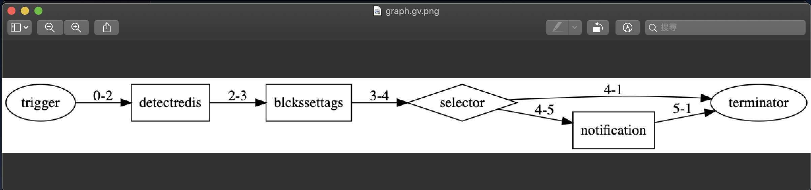

<!DOCTYPE html>
<html class="writer-html5" lang="en" >
<head>
  <meta charset="utf-8">
  
  <meta name="viewport" content="width=device-width, initial-scale=1.0">
  
  <title>The First Workflow Project &mdash; Pentium</title>
  

  
  <link rel="stylesheet" href="../_static/css/theme.css" type="text/css" />
  <link rel="stylesheet" href="../_static/pygments.css" type="text/css" />
  <link rel="stylesheet" href="../_static/css/table.css" type="text/css" />

  
  
  
  

  
  <!--[if lt IE 9]>
    <script src="../_static/js/html5shiv.min.js"></script>
  <![endif]-->
  
    
      <script type="text/javascript" id="documentation_options" data-url_root="../" src="../_static/documentation_options.js"></script>
        <script src="../_static/jquery.js"></script>
        <script src="../_static/underscore.js"></script>
        <script src="../_static/doctools.js"></script>
        <script src="../_static/language_data.js"></script>
    
    <script type="text/javascript" src="../_static/js/theme.js"></script>

    
    <link rel="index" title="Index" href="../genindex.html" />
    <link rel="search" title="Search" href="../search.html" />
    <link rel="next" title="Workflow Operators" href="conditional.html" />
    <link rel="prev" title="Workflow Schema" href="schema.html" /> 
</head>

<body class="wy-body-for-nav">

   
  <div class="wy-grid-for-nav">
    
    <nav data-toggle="wy-nav-shift" class="wy-nav-side">
      <div class="wy-side-scroll">
        <div class="wy-side-nav-search" >
          

          
            <a href="../index.html" class="icon icon-home" alt="Documentation Home"> Marvin Development Guide
          

          
          </a>

          
            
            
              <div class="version">
                1.0.1
              </div>
            
          

          
<div role="search">
  <form id="rtd-search-form" class="wy-form" action="../search.html" method="get">
    <input type="text" name="q" placeholder="Search docs" />
    <input type="hidden" name="check_keywords" value="yes" />
    <input type="hidden" name="area" value="default" />
  </form>
</div>

          
        </div>

        
        <div class="wy-menu wy-menu-vertical" data-spy="affix" role="navigation" aria-label="main navigation">
          
            
            
              
            
            
              <p class="caption"><span class="caption-text">GETTING STARTED</span></p>
<ul>
<li class="toctree-l1"><a class="reference internal" href="../start/index.html">Introduction</a></li>
<li class="toctree-l1"><a class="reference internal" href="../start/index.html#system-requirements">System Requirements</a></li>
<li class="toctree-l1"><a class="reference internal" href="../start/index.html#installing-trek-cli">Installing Trek CLI</a></li>
<li class="toctree-l1"><a class="reference internal" href="../start/quick_start.html">Quick Start</a></li>
<li class="toctree-l1"><a class="reference internal" href="../start/project_folder.html">The Project Directory Structure</a></li>
</ul>
<p class="caption"><span class="caption-text">USER GUIDE</span></p>
<ul class="current">
<li class="toctree-l1"><a class="reference internal" href="../config/index.html">Configuring the Trek CLI</a></li>
<li class="toctree-l1 current"><a class="reference internal" href="index.html">Developer Workflow</a><ul class="current">
<li class="toctree-l2"><a class="reference internal" href="schema.html">Workflow Schema</a></li>
<li class="toctree-l2 current"><a class="current reference internal" href="#">The First Workflow Project</a><ul>
<li class="toctree-l3"><a class="reference internal" href="#step-1-create-project">Step 1. Create project</a></li>
<li class="toctree-l3"><a class="reference internal" href="#step-2-create-blcks">Step 2. Create Blcks</a></li>
<li class="toctree-l3"><a class="reference internal" href="#step-3-install-scripts">Step 3. Install scripts</a></li>
<li class="toctree-l3"><a class="reference internal" href="#step-4-edit-workflow-template">Step 4. Edit workflow template</a></li>
<li class="toctree-l3"><a class="reference internal" href="#step-5-run">Step 5. Run</a></li>
<li class="toctree-l3"><a class="reference internal" href="#step-6-deploy">Step 6. Deploy</a></li>
</ul>
</li>
<li class="toctree-l2"><a class="reference internal" href="conditional.html">Workflow Operators</a></li>
<li class="toctree-l2"><a class="reference internal" href="conditional.html#workflow-logical-operators">Workflow Logical Operators</a></li>
</ul>
</li>
<li class="toctree-l1"><a class="reference internal" href="../script/index.html">Developer Script</a></li>
<li class="toctree-l1"><a class="reference internal" href="../extension/vscode/index.html">Working with VSCode Extension</a></li>
</ul>
<p class="caption"><span class="caption-text">REFERENCES</span></p>
<ul>
<li class="toctree-l1"><a class="reference internal" href="../cli/commands.html">CLI Command Reference</a></li>
<li class="toctree-l1"><a class="reference internal" href="../extension/vscode/commands.html">VSCode Extension Commands</a></li>
<li class="toctree-l1"><a class="reference internal" href="../library/index.html">Library List</a></li>
<li class="toctree-l1"><a class="reference external" href="https://github.com/pnetwork/core.trek.doc/tree/gh-pages/example/">Samples</a></li>
</ul>
<p class="caption"><span class="caption-text">ABOUT</span></p>
<ul>
<li class="toctree-l1"><a class="reference internal" href="../reference/cli/CHANGELOG.html">Trek CLI Changelog</a></li>
<li class="toctree-l1"><a class="reference internal" href="../reference/extension/CHANGELOG.html">Trek VSCode Extension Changelog</a></li>
<li class="toctree-l1"><a class="reference external" href="https://github.com/pnetwork/core.trek.doc/issues/">Issues Report</a></li>
</ul>

            
          
        </div>
        
      </div>
    </nav>

    <section data-toggle="wy-nav-shift" class="wy-nav-content-wrap">

      
      <nav class="wy-nav-top" aria-label="top navigation">
        
          <i data-toggle="wy-nav-top" class="fa fa-bars"></i>
          <a href="../index.html">Marvin Development Guide</a>
        
      </nav>


      <div class="wy-nav-content">
        
        <div class="rst-content">
        
          


<div role="navigation" aria-label="breadcrumbs navigation">

  <ul class="wy-breadcrumbs">
    
      <li><a href="../index.html" class="icon icon-home"></a> &raquo;</li>
        
          <li><a href="index.html">Developer Workflow</a> &raquo;</li>
        
      <li>The First Workflow Project</li>
    
    
      <li class="wy-breadcrumbs-aside">
        
            
        
      </li>
    
  </ul>

  
  <hr/>
</div>
          <div role="main" class="document" itemscope="itemscope" itemtype="http://schema.org/Article">
           <div itemprop="articleBody">
            
  <div class="section" id="the-first-workflow-project">
<h1>The First Workflow Project<a class="headerlink" href="#the-first-workflow-project" title="Permalink to this headline">¶</a></h1>
<div class="line-block">
<div class="line">我們將使用 Trek CLI 提供的命令列產生 workflow，在開始之前請先確認環境已安裝好 <a class="reference internal" href="../start/index.html#install-trek"><span class="std std-ref">Trek CLI</span></a>，<a class="reference internal" href="../config/index.html#config-trek"><span class="std std-ref">config.json</span></a> 已設置參數。</div>
<div class="line"><br /></div>
<div class="line">假設我們的開發範例：</div>
<div class="line">監控 redis 的連線，若連線不到標註 <code class="docutils literal notranslate"><span class="pre">&lt;redis:unreachable&gt;</span></code> 標籤，並發送 chatbot 通知。</div>
<div class="line">因此 workflow 需要三個腳本：</div>
</div>
<ol class="arabic simple">
<li><p>撈出特定服務器來檢查 redis 是否正常</p></li>
<li><p>針對結果打上標籤</p></li>
<li><p>發送通知 (若有不正常的)</p></li>
</ol>
<p>其中 1 為此次新增腳本，2, 3 則為既有腳本可直接安裝</p>
<div class="line-block">
<div class="line">在建立範本專案之前，請先確認 <em>config.json</em> 已設置了：</div>
</div>
<blockquote>
<div><ol class="arabic simple">
<li><p><a class="reference internal" href="../config/index.html#script-repo"><span class="std std-ref">script_repository</span></a>：安裝下載腳本時使用到。</p></li>
<li><p><a class="reference internal" href="../config/index.html#marvin-url"><span class="std std-ref">marvin_url *</span></a> 和 <a class="reference internal" href="../config/index.html#marvin-jwt"><span class="std std-ref">marvin_JWT *</span></a>：拿取服務器資產時使用。若不知道如何設置可以在 Step 1. 建立完專案後，在專案位置下指令「<a class="reference internal" href="../reference/cli/commands/login.html"><span class="doc">login</span></a>」即自動設置完成。</p></li>
</ol>
</div></blockquote>
<div class="admonition note">
<p class="admonition-title">Note</p>
<p>以下專案程式請參考 <a class="reference external" href="https://github.com/pnetwork/core.trek.doc/tree/gh-pages/example/host.detect.redis/ ">範例專案</a>。</p>
</div>
<div class="section" id="step-1-create-project">
<h2>Step 1. Create project<a class="headerlink" href="#step-1-create-project" title="Permalink to this headline">¶</a></h2>
<div class="line-block">
<div class="line">開始建立一個 Trek 專案。</div>
<div class="line">執行 <a class="reference internal" href="../reference/cli/commands/createproject.html"><span class="doc">createproject</span></a> 指令建立 Trek 專案「host.detect.redis」，接著會詢問是否要進行 <code class="docutils literal notranslate"><span class="pre">config.json</span></code> 的設置，每個 Trek 專案都有一份設定檔 <code class="docutils literal notranslate"><span class="pre">config.json</span></code>，您可以決定要定義專案層級的設置、或是全局的設置，這裡問的是專案層級的設置，若不需要可以不輸入文字直接按下 enter：</div>
<div class="line">想進一步了解 config 欄位 <a class="reference internal" href="../config/index.html#config-trek"><span class="std std-ref">請參考</span></a>。</div>
</div>
<div class="highlight-shell notranslate"><div class="highlight"><pre><span></span>$ trek createproject host.detect.redis
Project <span class="o">[</span>host.detect.redis<span class="o">]</span> creating...
This utility will walk you through creating a config.json file.
Marvin url <span class="o">[]</span>:
Marvin JWT <span class="o">[]</span>:
Marvin secret <span class="o">[]</span>:
Done
</pre></div>
</div>
<div class="line-block">
<div class="line">創建成功的 Trek 專案目錄結構會如下：</div>
<div class="line">若想了解每個檔案、資料夾的意義請參考 <a class="reference internal" href="../start/project_folder.html"><span class="doc">The Project Directory Structure</span></a>。</div>
</div>
<div class="highlight-shell notranslate"><div class="highlight"><pre><span></span>$ tree -a host.detect.redis
host.detect.redis/
├── .trek
│   └── config.json
├──inputs
│   ├── data.yml
│   └── event.yml
├── manifest.json
├── packages.json
└── src
    └── graph.yml
</pre></div>
</div>
</div>
<div class="section" id="step-2-create-blcks">
<h2>Step 2. Create Blcks<a class="headerlink" href="#step-2-create-blcks" title="Permalink to this headline">¶</a></h2>
<div class="line-block">
<div class="line">建立一個 Blcks 腳本，用來檢查 redis 連線。</div>
<div class="line">在專案目錄下，執行 <a class="reference internal" href="../reference/cli/commands/createblcks.html"><span class="doc">createblcks</span></a> 指令產生 Blcks detectredis 腳本：</div>
</div>
<div class="highlight-shell notranslate"><div class="highlight"><pre><span></span>$ <span class="nb">cd</span> host.detect.redis
$ trek createblcks detectredis
Blcks <span class="o">[</span>detectredis<span class="o">]</span> creating...
Done
$ tree -a
.
├── .trek
│   └── config.json
├── inputs
│   ├── data.yml
│   └── event.yml
├── manifest.json
├── packages.json
└── src
    ├── blcks
    │   └── detectredis
    │       ├── .gitignore
    │       ├── Makefile
    │       ├── detectredis.para
    │       ├── flake8.jenkins
    │       ├── handler
    │       │   ├── __init__.py
    │       │   ├── handler.py
    │       │   └── requirements.txt
    │       ├── openfaas.yml
    │       ├── requirements-test.txt
    │       ├── skaffold.yaml
    │       ├── tests
    │       │   ├── conftest.py
    │       │   └── test_blcks.py
    │       └── tox.ini
    └── graph.yml
</pre></div>
</div>
<div class="line-block">
<div class="line">產生的腳本位置於 <a class="reference external" href="https://github.com/pnetwork/core.trek.doc/tree/gh-pages/example/host.detect.redis/src/blcks/">host.detect.redis/src/blcks/</a>，接下來我們可以開始開發 Blcks 腳本了。</div>
<div class="line">首先，先制定腳本參數檔 para schema 於 <a class="reference external" href="https://github.com/pnetwork/core.trek.doc/tree/gh-pages/example/host.detect.redis/src/blcks/detectredis/detectredis.para">detectredis/detectredis.para</a>，定義輸入輸出欄位長相：</div>
</div>
<blockquote>
<div><ul class="simple">
<li><p>Inputs: 服務器標籤。撈取含此標籤的服務器做檢查，此範例標籤會是 <code class="docutils literal notranslate"><span class="pre">&lt;redis&gt;</span></code>；</p></li>
<li><p>Outputs: 連線不到的服務器、和其數量。</p></li>
</ul>
</div></blockquote>
<div class="highlight-yaml notranslate"><table class="highlighttable"><tr><td class="linenos"><div class="linenodiv"><pre> 1
 2
 3
 4
 5
 6
 7
 8
 9
10
11
12
13
14
15
16
17
18
19
20
21
22
23
24
25
26
27
28
29
30
31
32
33
34
35
36
37
38
39
40
41
42
43
44
45
46
47
48
49
50
51
52
53
54
55</pre></div></td><td class="code"><div class="highlight"><pre><span></span><span class="nn">---</span>
<span class="nt">id</span><span class="p">:</span> <span class="l l-Scalar l-Scalar-Plain">detectredis</span>
<span class="nt">schemaVersion</span><span class="p">:</span> <span class="s">&#39;0.2&#39;</span>
<span class="nt">name</span><span class="p">:</span> <span class="l l-Scalar l-Scalar-Plain">Redis connection monitor</span>
<span class="nt">title</span><span class="p">:</span> <span class="l l-Scalar l-Scalar-Plain">Redis connection monitor</span>
<span class="nt">version</span><span class="p">:</span> <span class="s">&quot;0.1.0&quot;</span>
<span class="nt">description</span><span class="p">:</span> <span class="s">&quot;Detect</span><span class="nv"> </span><span class="s">host</span><span class="nv"> </span><span class="s">redis</span><span class="nv"> </span><span class="s">connection.&quot;</span>
<span class="nt">namespace</span><span class="p">:</span> <span class="l l-Scalar l-Scalar-Plain">network.pentium</span>
<span class="nt">assets</span><span class="p">:</span>
  <span class="p p-Indicator">-</span> <span class="l l-Scalar l-Scalar-Plain">HOST</span>

<span class="nt">inputs</span><span class="p">:</span>
  <span class="nt">tag_name</span><span class="p">:</span>
    <span class="nt">name</span><span class="p">:</span> <span class="l l-Scalar l-Scalar-Plain">Tag name</span>
    <span class="nt">title</span><span class="p">:</span> <span class="l l-Scalar l-Scalar-Plain">Tag name</span>
    <span class="nt">type</span><span class="p">:</span> <span class="l l-Scalar l-Scalar-Plain">string</span>

<span class="nt">required</span><span class="p">:</span>
  <span class="p p-Indicator">-</span> <span class="l l-Scalar l-Scalar-Plain">tag_name</span>

<span class="nt">outputs</span><span class="p">:</span>
  <span class="nt">fail_hosts_count</span><span class="p">:</span>
    <span class="nt">name</span><span class="p">:</span> <span class="l l-Scalar l-Scalar-Plain">Fail host count</span>
    <span class="nt">title</span><span class="p">:</span> <span class="l l-Scalar l-Scalar-Plain">Fail host count</span>
    <span class="nt">type</span><span class="p">:</span> <span class="l l-Scalar l-Scalar-Plain">integer</span>
    <span class="nt">description</span><span class="p">:</span> <span class="s">&quot;&quot;</span>
  <span class="nt">fail_hosts</span><span class="p">:</span>
    <span class="nt">name</span><span class="p">:</span> <span class="l l-Scalar l-Scalar-Plain">Fail result</span>
    <span class="nt">title</span><span class="p">:</span> <span class="l l-Scalar l-Scalar-Plain">Fail result</span>
    <span class="nt">type</span><span class="p">:</span> <span class="l l-Scalar l-Scalar-Plain">array</span>
    <span class="nt">description</span><span class="p">:</span> <span class="s">&quot;Fail</span><span class="nv"> </span><span class="s">result&quot;</span>
    <span class="nt">items</span><span class="p">:</span>
      <span class="nt">type</span><span class="p">:</span> <span class="l l-Scalar l-Scalar-Plain">object</span>
      <span class="nt">properties</span><span class="p">:</span>
        <span class="nt">id</span><span class="p">:</span>
          <span class="nt">name</span><span class="p">:</span> <span class="l l-Scalar l-Scalar-Plain">Host id</span>
          <span class="nt">title</span><span class="p">:</span> <span class="l l-Scalar l-Scalar-Plain">Host id</span>
          <span class="nt">type</span><span class="p">:</span> <span class="l l-Scalar l-Scalar-Plain">string</span>
          <span class="nt">description</span><span class="p">:</span> <span class="l l-Scalar l-Scalar-Plain">Host id</span>
          <span class="nt">examples</span><span class="p">:</span>
          <span class="p p-Indicator">-</span> <span class="l l-Scalar l-Scalar-Plain">S-ajvw371v9</span>
        <span class="nt">name</span><span class="p">:</span>
          <span class="nt">name</span><span class="p">:</span> <span class="l l-Scalar l-Scalar-Plain">Host namne</span>
          <span class="nt">title</span><span class="p">:</span> <span class="l l-Scalar l-Scalar-Plain">Host namne</span>
          <span class="nt">description</span><span class="p">:</span> <span class="l l-Scalar l-Scalar-Plain">Host namne</span>
          <span class="nt">type</span><span class="p">:</span> <span class="l l-Scalar l-Scalar-Plain">string</span>
          <span class="nt">examples</span><span class="p">:</span>
          <span class="p p-Indicator">-</span> <span class="l l-Scalar l-Scalar-Plain">OS-Ubuntu18.04</span>
        <span class="nt">ip</span><span class="p">:</span>
          <span class="nt">name</span><span class="p">:</span> <span class="l l-Scalar l-Scalar-Plain">Host ip</span>
          <span class="nt">title</span><span class="p">:</span> <span class="l l-Scalar l-Scalar-Plain">Host ip</span>
          <span class="nt">description</span><span class="p">:</span> <span class="l l-Scalar l-Scalar-Plain">Host ip</span>
          <span class="nt">type</span><span class="p">:</span> <span class="l l-Scalar l-Scalar-Plain">string</span>
          <span class="nt">examples</span><span class="p">:</span>
          <span class="p p-Indicator">-</span> <span class="l l-Scalar l-Scalar-Plain">1.1.1.1</span>
</pre></div>
</td></tr></table></div>
<div class="line-block">
<div class="line">接著，要開發主要的程式 <a class="reference external" href="https://github.com/pnetwork/core.trek.doc/tree/gh-pages/example/host.detect.redis/src/blcks/detectredis/handler/handler.py">detectredis/handler/handler.py</a>：</div>
<div class="line">撈取含 <code class="docutils literal notranslate"><span class="pre">&lt;redis&gt;</span></code> 的服務器，並檢查是否可連線，若連線失敗就把此台服務器加入 outputs，其中要注意：</div>
</div>
<ul>
<li><p>主要程式會放在 process( ) function：</p>
<blockquote>
<div><ul class="simple">
<li><p>Function 參數 (tag_name) 與 para schema 的 inputs 欄位一致。</p></li>
<li><p>Function return (fail_hosts_count, fail_hosts...) 要與 para schema 的 outputs 定義的欄位一致。</p></li>
</ul>
</div></blockquote>
</li>
<li><p>在 <code class="docutils literal notranslate"><span class="pre">handler.py</span></code> 中可以使用 Blcks sdk 提供的 service 來操作 Marvin 平台上的資產，請參考 <a class="reference internal" href="../script/blcks/index.html"><span class="doc">Developer Blcks</span></a> 。</p></li>
</ul>
<div class="highlight-python notranslate"><table class="highlighttable"><tr><td class="linenos"><div class="linenodiv"><pre> 1
 2
 3
 4
 5
 6
 7
 8
 9
10
11
12
13
14
15
16
17
18
19
20
21
22
23
24
25
26
27
28
29
30
31
32
33
34
35
36
37
38
39
40
41
42</pre></div></td><td class="code"><div class="highlight"><pre><span></span><span class="kn">from</span> <span class="nn">blcks</span> <span class="kn">import</span> <span class="n">blcks</span>
<span class="kn">import</span> <span class="nn">json</span>
<span class="kn">import</span> <span class="nn">redis</span>

<span class="n">FAAS_METHOD_NAME</span> <span class="o">=</span> <span class="s2">&quot;detectredis&quot;</span>
<span class="n">logger</span> <span class="o">=</span> <span class="n">blcks</span><span class="o">.</span><span class="n">logger</span>


<span class="nd">@blcks</span>
<span class="k">def</span> <span class="nf">main</span><span class="p">(</span><span class="n">event</span><span class="p">,</span> <span class="n">context</span><span class="p">):</span>
    <span class="k">pass</span>


<span class="nd">@blcks</span><span class="o">.</span><span class="n">script</span><span class="p">(</span><span class="n">FAAS_METHOD_NAME</span><span class="p">)</span>
<span class="k">def</span> <span class="nf">process</span><span class="p">(</span><span class="n">tag_name</span><span class="p">):</span>
    <span class="n">result</span> <span class="o">=</span> <span class="p">{</span>
        <span class="s2">&quot;fail_hosts_count&quot;</span><span class="p">:</span> <span class="mi">0</span><span class="p">,</span>
        <span class="s2">&quot;fail_hosts&quot;</span><span class="p">:</span> <span class="p">[]</span>
    <span class="p">}</span>
    <span class="n">host_service</span> <span class="o">=</span> <span class="n">blcks</span><span class="o">.</span><span class="n">createService</span><span class="p">(</span><span class="n">blcks</span><span class="o">.</span><span class="n">ServiceName</span><span class="o">.</span><span class="n">HostsManager</span><span class="p">)</span>
    <span class="n">hosts</span> <span class="o">=</span> <span class="n">host_service</span><span class="o">.</span><span class="n">getHosts</span><span class="p">(</span><span class="n">search</span><span class="o">=</span><span class="s2">&quot;tag:redis&quot;</span><span class="p">)</span>
    <span class="n">host_tags</span> <span class="o">=</span> <span class="p">[]</span>
    <span class="k">for</span> <span class="n">h</span> <span class="ow">in</span> <span class="n">hosts</span><span class="o">.</span><span class="n">get</span><span class="p">(</span><span class="s2">&quot;data&quot;</span><span class="p">):</span>
        <span class="n">h_id</span> <span class="o">=</span> <span class="n">h</span><span class="p">[</span><span class="s2">&quot;id&quot;</span><span class="p">]</span>
        <span class="n">h_ip</span> <span class="o">=</span> <span class="n">h</span><span class="p">[</span><span class="s2">&quot;ip&quot;</span><span class="p">]</span>
        <span class="n">host_tags</span><span class="o">.</span><span class="n">append</span><span class="p">({</span><span class="s2">&quot;id&quot;</span><span class="p">:</span> <span class="n">h_id</span><span class="p">,</span> <span class="s2">&quot;type&quot;</span><span class="p">:</span> <span class="s2">&quot;server&quot;</span><span class="p">})</span>
        <span class="k">try</span><span class="p">:</span>
            <span class="n">redis_host</span> <span class="o">=</span> <span class="n">h_ip</span>
            <span class="n">r</span> <span class="o">=</span> <span class="n">redis</span><span class="o">.</span><span class="n">Redis</span><span class="p">(</span><span class="n">redis_host</span><span class="p">,</span> <span class="n">socket_connect_timeout</span><span class="o">=</span><span class="mi">5</span><span class="p">)</span>
            <span class="k">if</span> <span class="ow">not</span> <span class="n">r</span><span class="o">.</span><span class="n">ping</span><span class="p">():</span>
                <span class="n">result</span><span class="p">[</span><span class="s2">&quot;fail_hosts&quot;</span><span class="p">]</span><span class="o">.</span><span class="n">append</span><span class="p">({</span><span class="s2">&quot;id&quot;</span><span class="p">:</span> <span class="n">h_id</span><span class="p">,</span> <span class="s2">&quot;ip&quot;</span><span class="p">:</span> <span class="n">h_ip</span><span class="p">,</span> <span class="s2">&quot;name&quot;</span><span class="p">:</span> <span class="n">h</span><span class="p">[</span><span class="s2">&quot;name&quot;</span><span class="p">]})</span>
        <span class="k">except</span> <span class="n">redis</span><span class="o">.</span><span class="n">exceptions</span><span class="o">.</span><span class="n">RedisError</span><span class="p">:</span>
            <span class="n">result</span><span class="p">[</span><span class="s2">&quot;fail_hosts&quot;</span><span class="p">]</span><span class="o">.</span><span class="n">append</span><span class="p">({</span><span class="s2">&quot;id&quot;</span><span class="p">:</span> <span class="n">h_id</span><span class="p">,</span> <span class="s2">&quot;ip&quot;</span><span class="p">:</span> <span class="n">h_ip</span><span class="p">,</span> <span class="s2">&quot;name&quot;</span><span class="p">:</span> <span class="n">h</span><span class="p">[</span><span class="s2">&quot;name&quot;</span><span class="p">]})</span>

    <span class="n">patch_data</span> <span class="o">=</span> <span class="p">[{</span><span class="s2">&quot;name&quot;</span><span class="p">:</span> <span class="n">tag_name</span><span class="p">,</span> <span class="s2">&quot;tagged&quot;</span><span class="p">:</span> <span class="kc">False</span><span class="p">,</span> <span class="s2">&quot;assets&quot;</span><span class="p">:</span> <span class="n">host_tags</span><span class="p">}]</span>
    <span class="n">tag_service</span> <span class="o">=</span> <span class="n">blcks</span><span class="o">.</span><span class="n">createService</span><span class="p">(</span><span class="n">blcks</span><span class="o">.</span><span class="n">ServiceName</span><span class="o">.</span><span class="n">TagManager</span><span class="p">)</span>
    <span class="n">tag_service</span><span class="o">.</span><span class="n">updateTags</span><span class="p">(</span><span class="n">patch_data</span><span class="p">)</span>

    <span class="n">result</span><span class="p">[</span><span class="s2">&quot;fail_hosts_count&quot;</span><span class="p">]</span> <span class="o">=</span> <span class="nb">len</span><span class="p">(</span><span class="n">result</span><span class="p">[</span><span class="s2">&quot;fail_hosts&quot;</span><span class="p">])</span>
    <span class="n">blcks</span><span class="o">.</span><span class="n">logger</span><span class="o">.</span><span class="n">info</span><span class="p">(</span><span class="n">msg</span><span class="o">=</span><span class="s2">&quot;output result&quot;</span><span class="p">,</span> <span class="n">inputParamsStr</span><span class="o">=</span><span class="n">json</span><span class="o">.</span><span class="n">dumps</span><span class="p">(</span><span class="n">result</span><span class="p">))</span>

    <span class="k">return</span> <span class="n">result</span>
</pre></div>
</td></tr></table></div>
<p>接著，記得將主程式中使用的套件 <code class="docutils literal notranslate"><span class="pre">redis</span></code> 寫入 <a class="reference external" href="https://github.com/pnetwork/core.trek.doc/tree/gh-pages/example/host.detect.redis/src/blcks/detectredis/handler/requirements.txt">handler/requirements.txt</a> 中：</p>
<div class="highlight-python notranslate"><table class="highlighttable"><tr><td class="linenos"><div class="linenodiv"><pre>1
2</pre></div></td><td class="code"><div class="highlight"><pre><span></span><span class="o">-</span><span class="n">i</span> <span class="n">https</span><span class="p">:</span><span class="o">//</span><span class="n">package</span><span class="o">.</span><span class="n">pentium</span><span class="o">.</span><span class="n">network</span><span class="o">/</span><span class="n">repository</span><span class="o">/</span><span class="n">pypi</span><span class="o">-</span><span class="n">group</span><span class="o">/</span><span class="n">simple</span> <span class="o">--</span><span class="n">trusted</span><span class="o">-</span><span class="n">host</span><span class="o">=</span><span class="n">package</span><span class="o">.</span><span class="n">pentium</span><span class="o">.</span><span class="n">network</span>
<span class="n">redis</span>
</pre></div>
</td></tr></table></div>
</div>
<div class="section" id="step-3-install-scripts">
<h2>Step 3. Install scripts<a class="headerlink" href="#step-3-install-scripts" title="Permalink to this headline">¶</a></h2>
<div class="line-block">
<div class="line">從 script repository 下載安裝腳本。</div>
<div class="line">執行安裝指令 <a class="reference internal" href="../reference/cli/commands/install.html"><span class="doc">install</span></a>，現在我們要安裝腳本：</div>
</div>
<ul class="simple">
<li><p>資產設定標籤(blckssettags)</p></li>
<li><p>傳送訊息至指定頻道(notification)</p></li>
</ul>
<div class="highlight-shell notranslate"><div class="highlight"><pre><span></span>$ trek install notification
saving: <span class="o">{</span>your_trek_project_path<span class="o">}</span>/host.detect.redis/trek_packages/script.zip
<span class="m">100</span>%<span class="p">|</span>███████████████████████████████████████████████████████<span class="p">|</span> <span class="m">1</span>/1 <span class="o">[</span><span class="m">00</span>:00&lt;<span class="m">00</span>:00, <span class="m">2949</span>.58KB/s<span class="o">]</span>
extracting zip...
notification:0.5.0 installed
$ trek install blckssettags
...
blckssettags:<span class="o">==</span><span class="m">0</span>.3.0 installed
$ tree -a
.
├── .trek
│   └── config.json
├── inputs
├── src
│   ...
└── trek_packages
    └── notification
        ├── notification.para
        └── openfaas.yml
</pre></div>
</div>
<div class="line-block">
<div class="line">安裝下載的腳本檔案放在 <a class="reference external" href="https://github.com/pnetwork/core.trek.doc/tree/gh-pages/example/host.detect.redis/trek_packages">trek_packages/</a> 資料夾下；同時將下載腳本寫入至依賴安裝描述檔 <a class="reference external" href="https://github.com/pnetwork/core.trek.doc/tree/gh-pages/example/host.detect.redis/packages.json">packages.json</a>：</div>
</div>
<div class="highlight-json notranslate"><table class="highlighttable"><tr><td class="linenos"><div class="linenodiv"><pre>1
2
3
4
5
6</pre></div></td><td class="code"><div class="highlight"><pre><span></span><span class="p">{</span>
    <span class="nt">&quot;packages&quot;</span><span class="p">:</span> <span class="p">{</span>
        <span class="nt">&quot;blckssettags&quot;</span><span class="p">:</span> <span class="s2">&quot;==0.3.0&quot;</span><span class="p">,</span>
        <span class="nt">&quot;notification&quot;</span><span class="p">:</span> <span class="s2">&quot;==0.5.0&quot;</span>
    <span class="p">}</span>
<span class="p">}</span>
</pre></div>
</td></tr></table></div>
<div class="admonition note">
<p class="admonition-title">Note</p>
<p>可下載的腳本清單來自 Pentium 提供的公眾腳本 <a class="reference internal" href="../library/index.html#scripts-list"><span class="std std-ref">Scripts list</span></a>。</p>
</div>
</div>
<div class="section" id="step-4-edit-workflow-template">
<h2>Step 4. Edit workflow template<a class="headerlink" href="#step-4-edit-workflow-template" title="Permalink to this headline">¶</a></h2>
<div class="line-block">
<div class="line">決定好腳本後，開啟專案下的 <a class="reference external" href="https://github.com/pnetwork/core.trek.doc/tree/gh-pages/example/host.detect.redis/src/graph.yml">src/graph.yml</a> 開始編輯 workflow template 檔案，定義好整個工作流程：</div>
</div>
<div class="highlight-yaml notranslate"><table class="highlighttable"><tr><td class="linenos"><div class="linenodiv"><pre> 1
 2
 3
 4
 5
 6
 7
 8
 9
10
11
12
13
14
15
16
17
18
19
20
21
22
23
24
25
26
27
28
29
30
31
32
33
34
35
36
37
38
39
40
41
42
43
44
45
46
47
48
49
50
51
52
53
54
55
56
57
58
59
60
61
62
63
64
65
66
67
68
69
70
71
72
73
74
75
76
77
78
79
80
81
82
83
84
85
86
87
88
89
90
91
92</pre></div></td><td class="code"><div class="highlight"><pre><span></span><span class="nt">$schema</span><span class="p">:</span> <span class="s">&#39;http://json-schema.pentium.network/marvin-workflows/0.1/schema&#39;</span>
<span class="nt">graph</span><span class="p">:</span>
  <span class="nt">metadata</span><span class="p">:</span>
    <span class="nt">version</span><span class="p">:</span> <span class="l l-Scalar l-Scalar-Plain">0.1.0</span>
    <span class="nt">title</span><span class="p">:</span> <span class="l l-Scalar l-Scalar-Plain">Redis monitor</span>
    <span class="nt">templateId</span><span class="p">:</span> <span class="l l-Scalar l-Scalar-Plain">host.detect.redis</span>
    <span class="nt">description</span><span class="p">:</span> <span class="s">&quot;Redis</span><span class="nv"> </span><span class="s">monitor&quot;</span>
    <span class="nt">tags</span><span class="p">:</span> <span class="p p-Indicator">[]</span>
    <span class="nt">author</span><span class="p">:</span> <span class="l l-Scalar l-Scalar-Plain">trek</span>
  <span class="nt">nodes</span><span class="p">:</span>
    <span class="p p-Indicator">-</span> <span class="nt">metadata</span><span class="p">:</span>
        <span class="nt">sources</span><span class="p">:</span> <span class="p p-Indicator">[]</span>
        <span class="nt">type</span><span class="p">:</span> <span class="l l-Scalar l-Scalar-Plain">trigger</span>
        <span class="nt">title</span><span class="p">:</span> <span class="l l-Scalar l-Scalar-Plain">trigger</span>
        <span class="nt">description</span><span class="p">:</span> <span class="s">&#39;&#39;</span>
      <span class="nt">id</span><span class="p">:</span> <span class="s">&#39;0&#39;</span>
    <span class="p p-Indicator">-</span> <span class="nt">metadata</span><span class="p">:</span>
        <span class="nt">type</span><span class="p">:</span> <span class="l l-Scalar l-Scalar-Plain">terminator</span>
        <span class="nt">title</span><span class="p">:</span> <span class="l l-Scalar l-Scalar-Plain">terminator</span>
        <span class="nt">description</span><span class="p">:</span> <span class="s">&#39;&#39;</span>
      <span class="nt">id</span><span class="p">:</span> <span class="s">&#39;1&#39;</span>
    <span class="p p-Indicator">-</span> <span class="nt">metadata</span><span class="p">:</span>
        <span class="nt">type</span><span class="p">:</span> <span class="l l-Scalar l-Scalar-Plain">action</span>
        <span class="nt">title</span><span class="p">:</span> <span class="s">&#39;Monitor</span><span class="nv"> </span><span class="s">redis&#39;</span>
        <span class="nt">description</span><span class="p">:</span> <span class="s">&#39;&#39;</span>
        <span class="nt">script</span><span class="p">:</span> 
          <span class="nt">id</span><span class="p">:</span> <span class="l l-Scalar l-Scalar-Plain">detectredis</span>
      <span class="nt">id</span><span class="p">:</span> <span class="s">&#39;2&#39;</span>
    <span class="p p-Indicator">-</span> <span class="nt">metadata</span><span class="p">:</span>
        <span class="nt">type</span><span class="p">:</span> <span class="l l-Scalar l-Scalar-Plain">action</span>
        <span class="nt">title</span><span class="p">:</span> <span class="s">&#39;Tag</span><span class="nv"> </span><span class="s">host&#39;</span>
        <span class="nt">description</span><span class="p">:</span> <span class="s">&#39;&#39;</span>
        <span class="nt">script</span><span class="p">:</span> 
          <span class="nt">id</span><span class="p">:</span> <span class="l l-Scalar l-Scalar-Plain">blckssettags</span>
      <span class="nt">id</span><span class="p">:</span> <span class="s">&#39;3&#39;</span>
    <span class="p p-Indicator">-</span> <span class="nt">metadata</span><span class="p">:</span>
        <span class="nt">type</span><span class="p">:</span> <span class="l l-Scalar l-Scalar-Plain">selector</span>
        <span class="nt">title</span><span class="p">:</span> <span class="l l-Scalar l-Scalar-Plain">selector</span>
      <span class="nt">id</span><span class="p">:</span> <span class="s">&#39;4&#39;</span>
    <span class="p p-Indicator">-</span> <span class="nt">metadata</span><span class="p">:</span>
        <span class="nt">type</span><span class="p">:</span> <span class="l l-Scalar l-Scalar-Plain">action</span>
        <span class="nt">title</span><span class="p">:</span> <span class="s">&#39;Notify&#39;</span>
        <span class="nt">description</span><span class="p">:</span> <span class="s">&#39;&#39;</span>
        <span class="nt">script</span><span class="p">:</span> 
          <span class="nt">id</span><span class="p">:</span> <span class="l l-Scalar l-Scalar-Plain">notification</span>
      <span class="nt">id</span><span class="p">:</span> <span class="s">&#39;5&#39;</span>
  <span class="nt">edges</span><span class="p">:</span>
    <span class="p p-Indicator">-</span> <span class="nt">source</span><span class="p">:</span> <span class="s">&#39;0&#39;</span>
      <span class="nt">target</span><span class="p">:</span> <span class="s">&#39;2&#39;</span>
      <span class="nt">metadata</span><span class="p">:</span>
        <span class="nt">binding</span><span class="p">:</span>
        <span class="p p-Indicator">-</span> <span class="nt">property</span><span class="p">:</span> <span class="l l-Scalar l-Scalar-Plain">tag_name</span>
          <span class="nt">value</span><span class="p">:</span> <span class="s">&#39;redis:unreachable&#39;</span>
          <span class="nt">type</span><span class="p">:</span> <span class="s">&#39;string&#39;</span>
    <span class="p p-Indicator">-</span> <span class="nt">source</span><span class="p">:</span> <span class="s">&#39;2&#39;</span>
      <span class="nt">target</span><span class="p">:</span> <span class="s">&#39;3&#39;</span>
      <span class="nt">metadata</span><span class="p">:</span>
        <span class="nt">binding</span><span class="p">:</span>
        <span class="p p-Indicator">-</span> <span class="nt">property</span><span class="p">:</span> <span class="l l-Scalar l-Scalar-Plain">name</span>
          <span class="nt">value</span><span class="p">:</span> <span class="s">&#39;redis:unreachable&#39;</span>
          <span class="nt">type</span><span class="p">:</span> <span class="s">&#39;string&#39;</span>
        <span class="p p-Indicator">-</span> <span class="nt">property</span><span class="p">:</span> <span class="l l-Scalar l-Scalar-Plain">tagged</span>
          <span class="nt">value</span><span class="p">:</span> <span class="l l-Scalar l-Scalar-Plain">true</span>
          <span class="nt">type</span><span class="p">:</span> <span class="s">&#39;boolean&#39;</span>
        <span class="p p-Indicator">-</span> <span class="nt">property</span><span class="p">:</span> <span class="l l-Scalar l-Scalar-Plain">asset_type</span>
          <span class="nt">value</span><span class="p">:</span> <span class="l l-Scalar l-Scalar-Plain">server</span>
          <span class="nt">type</span><span class="p">:</span> <span class="s">&#39;string&#39;</span>
        <span class="p p-Indicator">-</span> <span class="nt">property</span><span class="p">:</span> <span class="l l-Scalar l-Scalar-Plain">ids</span>
          <span class="nt">value</span><span class="p">:</span> <span class="s">&#39;{{</span><span class="nv"> </span><span class="s">2.fail_hosts[].id</span><span class="nv"> </span><span class="s">}}&#39;</span>
          <span class="nt">type</span><span class="p">:</span> <span class="s">&#39;array&#39;</span>
    <span class="p p-Indicator">-</span> <span class="nt">source</span><span class="p">:</span> <span class="s">&#39;3&#39;</span>
      <span class="nt">target</span><span class="p">:</span> <span class="s">&#39;4&#39;</span>
    <span class="p p-Indicator">-</span> <span class="nt">source</span><span class="p">:</span> <span class="s">&#39;4&#39;</span>
      <span class="nt">target</span><span class="p">:</span> <span class="s">&#39;5&#39;</span>
      <span class="nt">metadata</span><span class="p">:</span>
        <span class="nt">filters</span><span class="p">:</span>
          <span class="nt">property</span><span class="p">:</span> <span class="l l-Scalar l-Scalar-Plain">nodes.2.fail_hosts_count</span>
          <span class="nt">operator</span><span class="p">:</span> <span class="s">&#39;&gt;&#39;</span>
          <span class="nt">value</span><span class="p">:</span> <span class="l l-Scalar l-Scalar-Plain">0</span>
        <span class="nt">binding</span><span class="p">:</span>
        <span class="p p-Indicator">-</span> <span class="nt">property</span><span class="p">:</span> <span class="l l-Scalar l-Scalar-Plain">str_message</span>
          <span class="nt">value</span><span class="p">:</span> <span class="s">&#39;The</span><span class="nv"> </span><span class="s">following</span><span class="nv"> </span><span class="s">host</span><span class="nv"> </span><span class="s">redis</span><span class="nv"> </span><span class="s">connection</span><span class="nv"> </span><span class="s">fail:</span><span class="nv"> </span><span class="s">{{</span><span class="nv"> </span><span class="s">2.fail_hosts</span><span class="nv"> </span><span class="s">}}&#39;</span>
          <span class="nt">type</span><span class="p">:</span> <span class="s">&#39;string&#39;</span>
    <span class="p p-Indicator">-</span> <span class="nt">source</span><span class="p">:</span> <span class="s">&#39;4&#39;</span>
      <span class="nt">target</span><span class="p">:</span> <span class="s">&#39;1&#39;</span>
      <span class="nt">metadata</span><span class="p">:</span>
        <span class="nt">filters</span><span class="p">:</span>
          <span class="nt">property</span><span class="p">:</span> <span class="l l-Scalar l-Scalar-Plain">nodes.2.fail_hosts_count</span>
          <span class="nt">operator</span><span class="p">:</span> <span class="s">&#39;&lt;=&#39;</span>
          <span class="nt">value</span><span class="p">:</span> <span class="l l-Scalar l-Scalar-Plain">0</span>
    <span class="p p-Indicator">-</span> <span class="nt">source</span><span class="p">:</span> <span class="s">&#39;5&#39;</span>
      <span class="nt">target</span><span class="p">:</span> <span class="s">&#39;1&#39;</span>
</pre></div>
</td></tr></table></div>
<div class="line-block">
<div class="line">我們在製作的是 workflow template，想讓使用者在安裝 workflow instance 至項目時自己決定要傳送的的 chatbot，因此把 chatbot id 在 workflow template 寫死要傳送的頻道是不合適的。</div>
<div class="line"><br /></div>
<div class="line">我們可以使用工作流程參數檔 <a class="reference external" href="https://github.com/pnetwork/core.trek.doc/tree/gh-pages/example/host.detect.redis/inputs/data.yaml">inputs/data.yaml</a>；工作流程參數檔僅在本機執行時會使用到，之後的打包佈署動作並不會包含這個檔案，請填入以下：</div>
<div class="line">Chatbot id 的取得 <a class="reference internal" href="../start/quick_start.html#find-chatbot-id"><span class="std std-ref">請參考這裡</span></a>。</div>
</div>
<div class="highlight-yaml notranslate"><table class="highlighttable"><tr><td class="linenos"><div class="linenodiv"><pre>1
2
3
4
5</pre></div></td><td class="code"><div class="highlight"><pre><span></span><span class="c1"># Created by trek CLI</span>
<span class="nt">4-5</span><span class="p">:</span>
  <span class="nt">bot_infos.0</span><span class="p">:</span>
    <span class="nt">type</span><span class="p">:</span> <span class="l l-Scalar l-Scalar-Plain">string</span>
    <span class="nt">value</span><span class="p">:</span> <span class="s">&#39;{input</span><span class="nv"> </span><span class="s">your</span><span class="nv"> </span><span class="s">chatbot</span><span class="nv"> </span><span class="s">id}&#39;</span> <span class="c1"># 此欄位為 chatbot id，請依 marvin 平台設置</span>
</pre></div>
</td></tr></table></div>
<div class="line-block">
<div class="line">編輯完成，若要使用進階功能查看 workflow 流程圖，可以下指令 <a class="reference internal" href="../reference/cli/commands/graph.html"><span class="doc">graph</span></a>：</div>
</div>
<div class="highlight-shell notranslate"><div class="highlight"><pre><span></span><span class="nv">$trek</span> graph --show
digraph <span class="s2">&quot;host.detect.redis&quot;</span> <span class="o">{</span>
    <span class="nv">dpi</span><span class="o">=</span><span class="m">150</span> <span class="nv">rankdir</span><span class="o">=</span>LR <span class="nv">size</span><span class="o">=</span><span class="s2">&quot;8,5&quot;</span>
    <span class="m">0</span> <span class="o">[</span><span class="nv">label</span><span class="o">=</span>trigger <span class="nv">shape</span><span class="o">=</span>oval<span class="o">]</span>
    <span class="m">1</span> <span class="o">[</span><span class="nv">label</span><span class="o">=</span>terminator <span class="nv">shape</span><span class="o">=</span>oval<span class="o">]</span>
    <span class="m">2</span> <span class="o">[</span><span class="nv">label</span><span class="o">=</span>detectredis <span class="nv">shape</span><span class="o">=</span>box<span class="o">]</span>
    <span class="m">3</span> <span class="o">[</span><span class="nv">label</span><span class="o">=</span>blckssettags <span class="nv">shape</span><span class="o">=</span>box<span class="o">]</span>
    <span class="m">4</span> <span class="o">[</span><span class="nv">label</span><span class="o">=</span>selector <span class="nv">shape</span><span class="o">=</span>diamond<span class="o">]</span>
    <span class="m">5</span> <span class="o">[</span><span class="nv">label</span><span class="o">=</span>notification <span class="nv">shape</span><span class="o">=</span>box<span class="o">]</span>
    <span class="m">0</span> -&gt; <span class="m">2</span> <span class="o">[</span><span class="nv">label</span><span class="o">=</span><span class="s2">&quot;0-2&quot;</span><span class="o">]</span>
    <span class="m">2</span> -&gt; <span class="m">3</span> <span class="o">[</span><span class="nv">label</span><span class="o">=</span><span class="s2">&quot;2-3&quot;</span><span class="o">]</span>
    <span class="m">3</span> -&gt; <span class="m">4</span> <span class="o">[</span><span class="nv">label</span><span class="o">=</span><span class="s2">&quot;3-4&quot;</span><span class="o">]</span>
    <span class="m">4</span> -&gt; <span class="m">5</span> <span class="o">[</span><span class="nv">label</span><span class="o">=</span><span class="s2">&quot;4-5&quot;</span><span class="o">]</span>
    <span class="m">4</span> -&gt; <span class="m">1</span> <span class="o">[</span><span class="nv">label</span><span class="o">=</span><span class="s2">&quot;4-1&quot;</span><span class="o">]</span>
    <span class="m">5</span> -&gt; <span class="m">1</span> <span class="o">[</span><span class="nv">label</span><span class="o">=</span><span class="s2">&quot;5-1&quot;</span><span class="o">]</span>
<span class="o">}</span>
</pre></div>
</div>

</div>
<div class="section" id="step-5-run">
<h2>Step 5. Run<a class="headerlink" href="#step-5-run" title="Permalink to this headline">¶</a></h2>
<div class="line-block">
<div class="line">開發和安裝都完成後，我們可以在本機執行了。</div>
<div class="line">提供兩種執行方式執行工作流程，擇一即可： <a class="reference internal" href="#auto-run"><span class="std std-ref">方法 1. 自動執行</span></a>、<a class="reference internal" href="#manual-run"><span class="std std-ref">方法 2. 手動執行</span></a></div>
</div>
<div class="section" id="auto-run">
<span id="id1"></span><h3>方法 1. 自動執行<a class="headerlink" href="#auto-run" title="Permalink to this headline">¶</a></h3>
<div class="line-block">
<div class="line">使用自動執行，當程式有異動時，使用 <a class="reference internal" href="../reference/cli/commands/run.html"><span class="doc">run --auto</span></a> 自動偵測環境是否需要重啟。</div>
</div>
<div class="highlight-shell notranslate"><div class="highlight"><pre><span></span>$ trek run --auto
Warning! lost containers: <span class="o">[</span>notification, detectredis<span class="o">]</span>
auto re-UP
starting blcks detectredis...
starting blcks blckssettags...
starting blcks notification...
starting trek-router...
Workflow <span class="o">[</span>host.detect.redis<span class="o">]</span> start...
<span class="o">[</span>TRIGGER<span class="o">]</span> id: <span class="m">0</span>, type: trigger, interval: <span class="m">0</span>
<span class="o">[</span>TRIGGER<span class="o">]</span> id: <span class="m">2</span>, type: action, interval: <span class="m">0</span>
<span class="o">[</span>EXEC<span class="o">]</span> id: <span class="m">2</span>, type: action, scriptId: detectredis, scriptType: blcks
<span class="o">[</span>FINISH<span class="o">]</span> id: <span class="m">2</span>, type: action, scriptId: detectredis, scriptType: blcks
<span class="o">[</span>TRIGGER<span class="o">]</span> id: <span class="m">3</span>, type: action, interval: <span class="m">0</span>
<span class="o">[</span>EXEC<span class="o">]</span> id: <span class="m">3</span>, type: action, scriptId: blckssettags, scriptType: blcks
<span class="o">[</span>FINISH<span class="o">]</span> id: <span class="m">3</span>, type: action, scriptId: blckssettags, scriptType: blcks
<span class="o">[</span>TRIGGER<span class="o">]</span> id: <span class="m">4</span>, type: selector, interval: <span class="m">0</span>
<span class="o">[</span>EXEC<span class="o">]</span> id: <span class="m">4</span>, type: selector, scriptId: , scriptType: not_script
<span class="o">[</span>FINISH<span class="o">]</span> id: <span class="m">4</span>, type: selector, scriptId: , scriptType: not_script
<span class="o">[</span>TRIGGER<span class="o">]</span> id: <span class="m">1</span>, type: terminator, interval: <span class="m">0</span>
<span class="o">[</span>EXEC<span class="o">]</span> id: <span class="m">1</span>, type: terminator, scriptId: , scriptType: not_script
<span class="o">[</span>FINISH<span class="o">]</span> id: <span class="m">1</span>, type: terminator, scriptId: , scriptType: not_script
Done. <span class="o">[</span>host.detect.redis<span class="o">]</span>
</pre></div>
</div>
</div>
<div class="section" id="manual-run">
<span id="id2"></span><h3>方法 2. 手動執行<a class="headerlink" href="#manual-run" title="Permalink to this headline">¶</a></h3>
<div class="line-block">
<div class="line">不需要靠系統自動偵測，直接手動啟動或停止執行環境。</div>
<div class="line">當 <code class="docutils literal notranslate"><span class="pre">config.json</span></code> 的環境參數、或是 workflow template 的圖結構有異動時，需要重啟 (先 <a class="reference internal" href="../reference/cli/commands/shutdownenv.html"><span class="doc">shutdownenv</span></a> 再 <a class="reference internal" href="../reference/cli/commands/initenv.html"><span class="doc">initenv</span></a>)。</div>
<div class="line">首先使用指令 <a class="reference internal" href="../reference/cli/commands/initenv.html"><span class="doc">initenv</span></a> 啟動執行環境：</div>
</div>
<div class="highlight-shell notranslate"><div class="highlight"><pre><span></span>$ trek initenv
Starting environment...
starting blcks detectredis...
starting blcks blckssettags...
starting blcks notification...
starting trek-router...
Done
</pre></div>
</div>
<div class="highlight-shell notranslate"><div class="highlight"><pre><span></span>$ trek run
Workflow <span class="o">[</span>host.detect.redis<span class="o">]</span> start...
<span class="o">[</span>TRIGGER<span class="o">]</span> id: <span class="m">0</span>, type: trigger, interval: <span class="m">0</span>
<span class="o">[</span>TRIGGER<span class="o">]</span> id: <span class="m">2</span>, type: action, interval: <span class="m">0</span>
<span class="o">[</span>EXEC<span class="o">]</span> id: <span class="m">2</span>, type: action, scriptId: detectredis, scriptType: blcks
<span class="o">[</span>FINISH<span class="o">]</span> id: <span class="m">2</span>, type: action, scriptId: detectredis, scriptType: blcks
<span class="o">[</span>TRIGGER<span class="o">]</span> id: <span class="m">3</span>, type: action, interval: <span class="m">0</span>
<span class="o">[</span>EXEC<span class="o">]</span> id: <span class="m">3</span>, type: action, scriptId: blckssettags, scriptType: blcks
<span class="o">[</span>FINISH<span class="o">]</span> id: <span class="m">3</span>, type: action, scriptId: blckssettags, scriptType: blcks
<span class="o">[</span>TRIGGER<span class="o">]</span> id: <span class="m">4</span>, type: selector, interval: <span class="m">0</span>
<span class="o">[</span>EXEC<span class="o">]</span> id: <span class="m">4</span>, type: selector, scriptId: , scriptType: not_script
<span class="o">[</span>FINISH<span class="o">]</span> id: <span class="m">4</span>, type: selector, scriptId: , scriptType: not_script
<span class="o">[</span>TRIGGER<span class="o">]</span> id: <span class="m">1</span>, type: terminator, interval: <span class="m">0</span>
<span class="o">[</span>EXEC<span class="o">]</span> id: <span class="m">1</span>, type: terminator, scriptId: , scriptType: not_script
<span class="o">[</span>FINISH<span class="o">]</span> id: <span class="m">1</span>, type: terminator, scriptId: , scriptType: not_script
Done. <span class="o">[</span>host.detect.redis<span class="o">]</span>
</pre></div>
</div>
<div class="line-block">
<div class="line">執行完成後可以查看剛剛設定在 workflow template 的 chatbot，若 redis 連線異常會有告警訊息!</div>
<div class="line"><br /></div>
<div class="line">如果想要手動停止執行環境，可以使用 <a class="reference internal" href="../reference/cli/commands/shutdownenv.html"><span class="doc">shutdownenv</span></a> 指令：</div>
</div>
<div class="highlight-shell notranslate"><div class="highlight"><pre><span></span>$ trek shutdownenv
Closing environment...
closing blcks detectredis...
closing blcks blckssettags...
closing blcks notification...
closing trek-router...
Done
</pre></div>
</div>
</div>
</div>
<div class="section" id="step-6-deploy">
<h2>Step 6. Deploy<a class="headerlink" href="#step-6-deploy" title="Permalink to this headline">¶</a></h2>
<div class="line-block">
<div class="line">當在本機開發測試一切就續後，我們可以透過佈署指令直接把腳本、工作流程安裝到 marvin 平台，並在 marvin 平台上實際上操作使用。</div>
<div class="line">Trek 提供兩種方法讓您佈佈署至 marvin 平台：<a class="reference internal" href="#auto-deploy"><span class="std std-ref">方法 1. 自動佈署</span></a>、<a class="reference internal" href="#manual-deploy"><span class="std std-ref">方法 2. 手動佈署</span></a></div>
</div>
<div class="section" id="auto-deploy">
<span id="id3"></span><h3>方法 1. 自動佈署<a class="headerlink" href="#auto-deploy" title="Permalink to this headline">¶</a></h3>
<p>自動佈署 <a class="reference internal" href="../reference/cli/commands/deploy.html"><span class="doc">deploy</span></a> 動作包含建置、打包、佈署：</p>
<div class="highlight-shell notranslate"><div class="highlight"><pre><span></span>$ trek deploy -a --autobuildpush --autopack
Deploy workflow with all packages...
Build blcks: detectredis
Path: <span class="o">{</span>your_trek_project_path<span class="o">}</span>/host.detect.redis/src/blcks/detectredis/handler
<span class="m">1</span>: Pulling from baseimg/python3-blcks-flask
bdf0201bxxx: Already exists
...
building blcks <span class="o">[</span>detectredis<span class="o">]</span>...
Step <span class="m">1</span>/30 : FROM dockerhub.pentium.network/baseimg/faas-python3-flask:20191018-0448e4d as builder
...
Blcks image complete.
Finish building. <span class="o">[</span>detectredis<span class="o">]</span>
Push blcks: detectredis
Path: <span class="o">{</span>your_trek_project_path<span class="o">}</span>/host.detect.redis/src/blcks/detectredis/handler
Push image: <span class="o">{</span>your_dockerhub_path<span class="o">}</span>/detectredis:0.1.0
The push refers to repository <span class="o">[{</span>your_dockerhub_path<span class="o">}</span>/detectredis<span class="o">]</span>
...
Finish pushing. <span class="o">[</span>detectredis<span class="o">]</span>
Success packing, output: <span class="o">{</span>your_trek_project_path<span class="o">}</span>/host.detect.redis/bin/host.detect.redis-0.0.0.zip
Packing blcks: <span class="o">{</span>your_trek_project_path<span class="o">}</span>/host.detect.redis/src/blcks/detectredis
Success packing, output: <span class="o">{</span>your_trek_project_path<span class="o">}</span>/host.detect.redis/bin/blcks.detectredis-0.1.0.zip
Deploying: <span class="o">{</span>your_trek_project_path<span class="o">}</span>/host.detect.redis/bin/host.detect.redis-0.0.0.zip
Done
</pre></div>
</div>
</div>
<div class="section" id="manual-deploy">
<span id="id4"></span><h3>方法 2. 手動佈署<a class="headerlink" href="#manual-deploy" title="Permalink to this headline">¶</a></h3>
<ol class="arabic">
<li><p><a class="reference internal" href="../reference/cli/commands/build.html"><span class="doc">build</span></a>: 手動佈署首先要建置腳本的 image 檔</p>
<div class="highlight-shell notranslate"><div class="highlight"><pre><span></span>$ trek build
Build blcks: detectredis
Path: <span class="o">{</span>your_trek_project_path<span class="o">}</span>/host.detect.redis/src/blcks/detectredis/handler
<span class="m">1</span>: Pulling from baseimg/python3-blcks-flask
Digest: sha256:3d3a3b209e77xxxx
Status: Image is up to date <span class="k">for</span> dockerhub.pentium.network/baseimg/python3-blcks-flask:1
building blcks <span class="o">[</span>detectredis<span class="o">]</span>...
...
Successfully built 6a61xxx
Successfully tagged <span class="o">{</span>your_dockerhub_path<span class="o">}</span>/detectredis:0.1.0
Blcks image complete.
Finish building. <span class="o">[</span>detectredis<span class="o">]</span>
</pre></div>
</div>
</li>
<li><p><a class="reference internal" href="../reference/cli/commands/push.html"><span class="doc">push</span></a>: 將 image 檔推到 dockerhub 上</p>
<div class="highlight-shell notranslate"><div class="highlight"><pre><span></span>$ trek push
Push blcks: detectredis
Path: <span class="o">{</span>your_trek_project_path<span class="o">}</span>/host.detect.redis/src/blcks/detectredis/handler
Push image: <span class="o">{</span>your_dockerhub_path<span class="o">}</span>/detectredis:0.1.0
The push refers to repository <span class="o">[{</span>your_dockerhub_path<span class="o">}</span>/detectredis<span class="o">]</span>
...
Finish pushing. <span class="o">[</span>detectredis<span class="o">]</span>
</pre></div>
</div>
</li>
<li><p><a class="reference internal" href="../reference/cli/commands/pack.html"><span class="doc">pack</span></a>: 打包要上傳到 marvin 平台的檔案：</p>
<div class="highlight-shell notranslate"><div class="highlight"><pre><span></span>$ trek pack -a
Success packing, output: <span class="o">{</span>your_trek_project_path<span class="o">}</span>/host.detect.redis/bin/host.detect.redis-0.0.0.zip
Packing blcks: <span class="o">{</span>your_trek_project_path<span class="o">}</span>/host.detect.redis/src/blcks/detectredis
Success packing, output: <span class="o">{</span>your_trek_project_path<span class="o">}</span>/host.detect.redis/bin/blcks.detectredis-0.1.0.zip
</pre></div>
</div>
</li>
<li><p><a class="reference internal" href="../reference/cli/commands/deploy.html"><span class="doc">deploy</span></a>: 佈署至 marvin 平台：</p>
<div class="highlight-shell notranslate"><div class="highlight"><pre><span></span>$ trek deploy -a
Deploy workflow with all packages...
Deploying: <span class="o">{</span>your_trek_project_path<span class="o">}</span>/host.detect.redis/bin/blcks.detectredis-0.1.0.zip
Deploying: <span class="o">{</span>your_trek_project_path<span class="o">}</span>/host.detect.redis/bin/host.detect.redis-0.0.0.zip
Done
</pre></div>
</div>
</li>
</ol>
<p>恭喜! Trek 專案完成了。</p>
</div>
</div>
</div>


           </div>
           
          </div>
          <footer>
  
    <div class="rst-footer-buttons" role="navigation" aria-label="footer navigation">
      
        <a href="conditional.html" class="btn btn-neutral float-right" title="Workflow Operators" accesskey="n" rel="next">Next <span class="fa fa-arrow-circle-right"></span></a>
      
      
        <a href="schema.html" class="btn btn-neutral float-left" title="Workflow Schema" accesskey="p" rel="prev"><span class="fa fa-arrow-circle-left"></span> Previous</a>
      
    </div>
  

  <hr/>

  <div role="contentinfo">
    <p>
        
        &copy; Copyright 2020, Pentium Network Technology Ltd. All rights reserved.

    </p>
  </div>
    
    
    
    Built with <a href="http://sphinx-doc.org/">Sphinx</a> using a
    
    <a href="https://github.com/rtfd/sphinx_rtd_theme">theme</a>
    
    provided by <a href="https://readthedocs.org">Read the Docs</a>. 

</footer>

        </div>
      </div>

    </section>

  </div>
  

  <script type="text/javascript">
      jQuery(function () {
          SphinxRtdTheme.Navigation.enable(true);
      });
  </script>

  
  
    
   

</body>
</html>